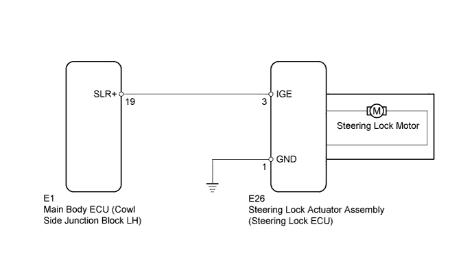
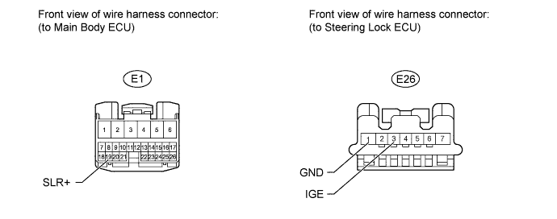

DTC B2782 Power Source Control ECU Malfunction |
| DTC Code | Detection Condition | Trouble Area |
| B2782 | IGE power supply circuit malfunction |
|

| 1.CHECK DTC OUTPUT (B2785) |
Check for DTCs (Click here).
|
| ||||
| OK | |
| 2.INSPECT STEERING LOCK ECU |
 |
Measure the voltage according to the value(s) in the table below.
| Tester Connection | Condition | Specified Condition |
| E26-3 (IGE) - E26-1 (GND) |
| Below 1 V |
| E26-3 (IGE) - E26-1 (GND) |
| 11 to 14 V |
| Result | Proceed to |
| Within specified range (for Power tilt and telescopic) | A |
| Outside specified range | B |
| Within specified range (for Manual tilt and telescopic) | C |
|
| ||||
|
| ||||
| A | ||
| ||
| 3.CHECK HARNESS AND CONNECTOR (STEERING LOCK ECU - MAIN BODY ECU AND BODY GROUND) |

Disconnect the E26 steering lock ECU connector.
Disconnect the E1 main body ECU connector.
Measure the resistance according to the value(s) in the table below.
| Tester Connection | Condition | Specified Condition |
| E26-3 (IGE) - E1-19 (SLR+) | Always | Below 1 Ω |
| E26-1 (GND) - Body ground | Always | Below 1 Ω |
| E26-3 (IGE) or E1-19 (SLR+) - Body ground | Always | 10 kΩ or higher |
|
| ||||
| OK | ||
| ||